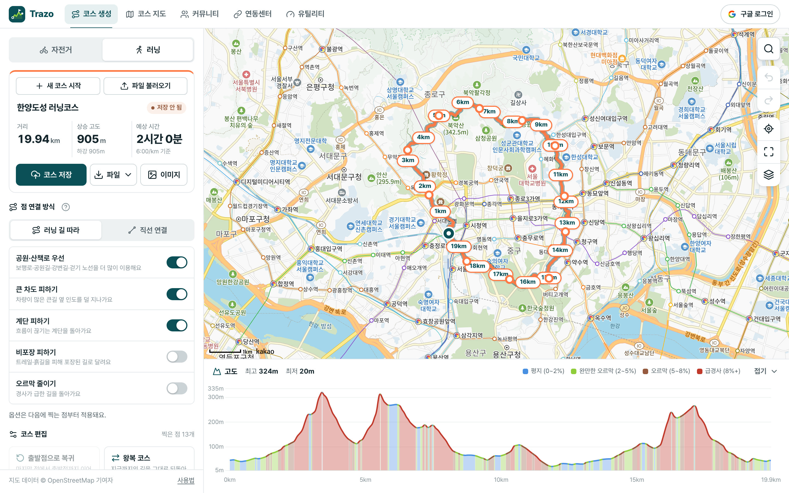
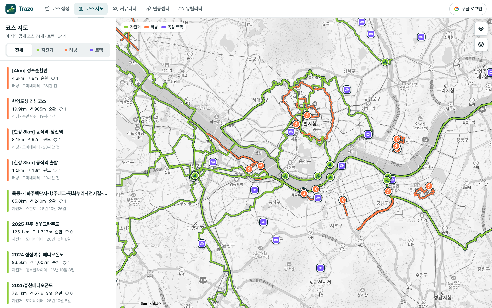
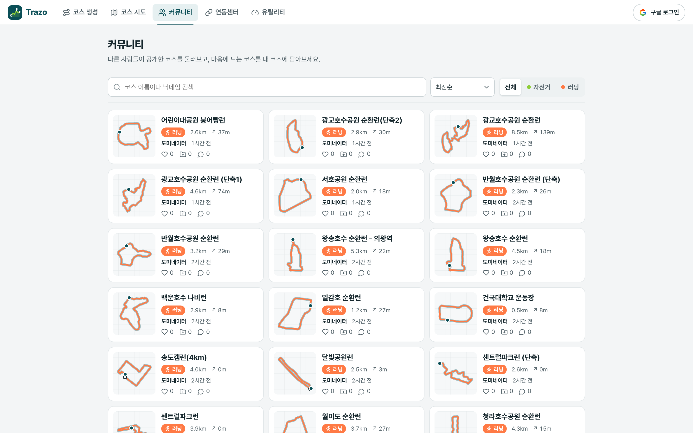
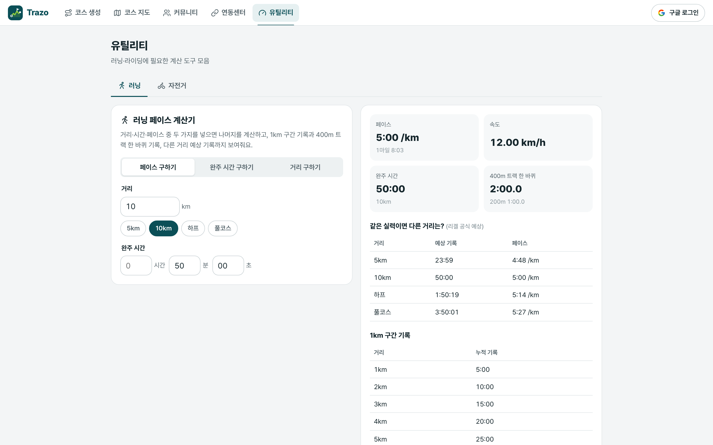

Trazo
자전거 · 러닝 코스 플래너
지도에 점을 찍으면
나만의 코스
가
됩니다
종목에 맞는 길을 따라 자동으로 잇고, 거리·상승 고도·예상 시간을 바로 확인하세요.
카카오 지도 기반
GPX · FIT · TCX
무료
trazo.runvia.app

Trazo
코스 만들기
오르막까지
미리 알고
출발
자전거는 자전거길로, 러닝은 공원·산책로로. 종목마다 다른 길찾기
큰 차도·계단·비포장·오르막 피하기 옵션
경사도별 색으로 보는 고도 그래프와 1km 거리 표시
출발점 복귀·왕복 코스를 한 번에
러닝 길 따라 자동 연결
경사 구간을 색으로 · 최고 324m
Trazo
내보내기 · 공유
만든 코스는
기기로, 친구에게
가민·와후·스트라바에 바로 넣는 코스 파일
링크 하나로 공유하고, 받는 사람은 로그인 없이 보기
급수·정상·위험 지점 웨이포인트까지 함께
고도 그래프를 담은 인쇄용 코스 이미지
GPX
FIT
TCX
KML
GeoJSON
trazo.runvia.app/c/…
Trazo
코스 지도 · 커뮤니티
우리 동네
인기 코스
를
한눈에
다른 러너·라이더가 공개한 코스를 지도 위에 겹쳐 보기
최신순·인기순·거리순·상승 고도순으로 둘러보기
마음에 드는 코스는 내 코스에 담아 바로 내려받기
좋아요와 댓글로 코스 정보 나누기
trazo.runvia.app/explore

trazo.runvia.app/community

Trazo
훈련 도구
코스에서
훈련
까지
한 곳에서
러닝 페이스 계산기: 목표 기록으로 페이스·구간 기록·예상 기록
400m 트랙 한 바퀴 기록으로 인터벌 훈련
전국 공공 육상 트랙 지도
ChatGPT·Claude와 연결해 코스 추천·훈련 계획
trazo.runvia.app/utility
